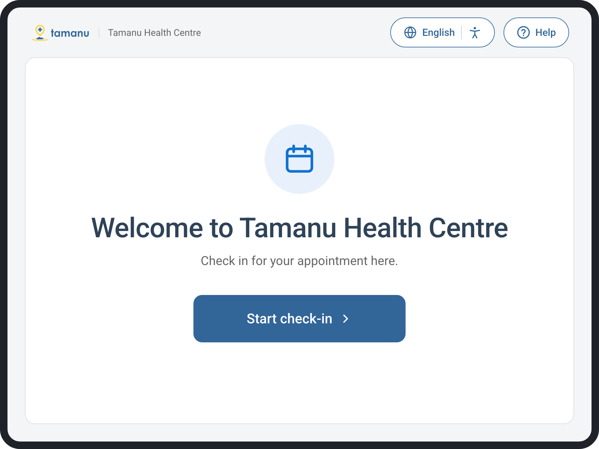
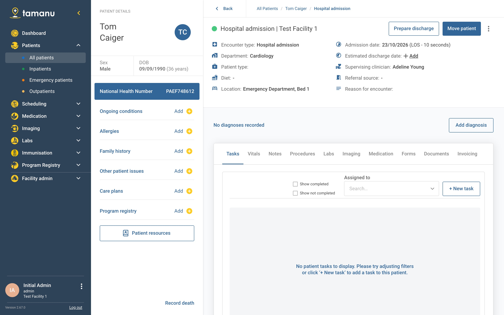
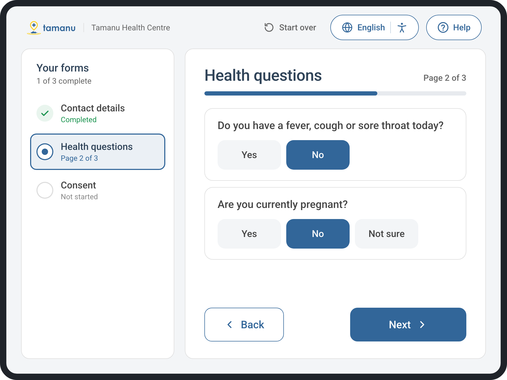
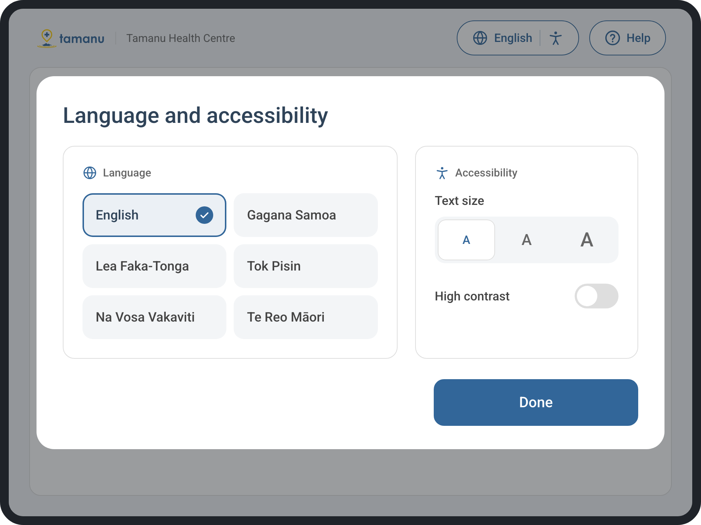
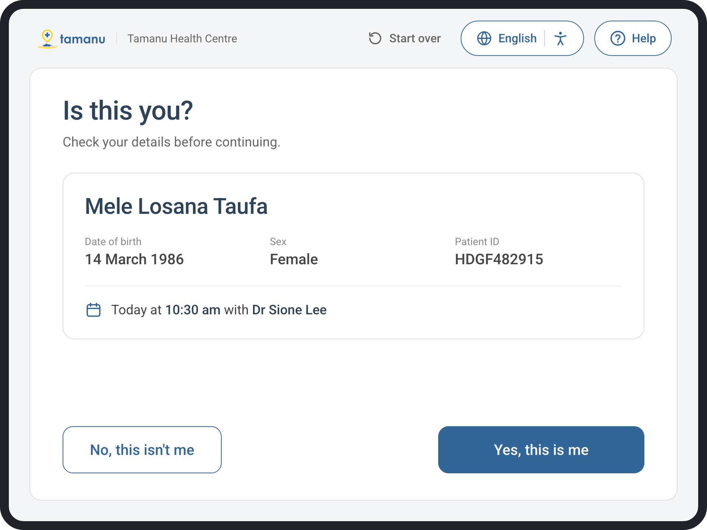
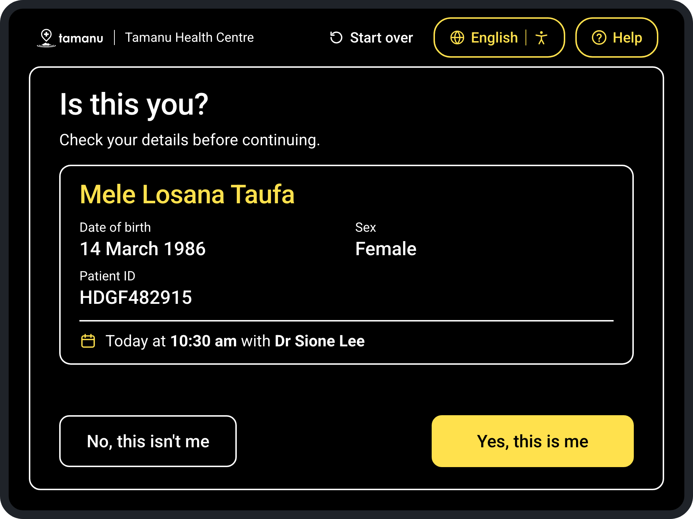

Why it's a GEDSI issue, and how
we're building it in

01 · Meet Tamanu

Tamanu desktop · for clinical staff

Self check-in kiosk · for patients
02 · Where it fits
Sex is recorded and reportable, so gaps in care show up in the data.
Patients and health workers use Tamanu independently, with their own assistive tech.
Accessibility lives hereOffline, on mobile and translated, so no one is left out by place, language or connection.
03 · The scale
people worldwide, about
1.3 billion, experience
significant disability.
Every one a potential Tamanu patient or user.
04 · Who it affects
| Permanent | Temporary | Situational, in a Tamanu day | |
|---|---|---|---|
| Seeing | Blind or low vision | Eyes dilated after an eye exam | Glare on a tablet at an outreach clinic |
| Touch | Limb difference or limited dexterity | A broken wrist | Gloved hands at the bedside |
| Hearing | Deaf or hard of hearing | An ear infection | A noisy ward or waiting room |
| Thinking | Learning or cognitive disability | Concussion or illness | Fatigue at the end of a night shift |
05 · Beyond disability
Larger text and high contrast on the kiosk help as eyesight changes.
Every word in Tamanu is translatable, and plain labels translate better.
Tamanu works offline and on Android, so care reaches outreach clinics.
Women are about two-thirds of health workers: clear, forgiving software supports them.
06 · What good looks like
Text alternatives, readable contrast, and never colour alone.
In TamanuText size and high contrast on the kiosk
Works by keyboard, focus always visible, targets easy to hit.
In TamanuReal buttons and links, large touch targets
Plain language, predictable navigation, errors that explain the fix.
In TamanuOne translation system, consistent wording
Semantic code that assistive tech can interpret reliably.
In TamanuLabelled controls that screen readers announce
07 · Designed in: self check-in kiosk

07 · Designed in: self check-in kiosk

Standard

High contrast and extra large text
08 · Case study
findings from an independent WCAG 2.2 AA audit by OpenAccess, grouped into 30 solution-based fixes
09 · What we can do
| If you work in... | Try this |
|---|---|
| Product and projects | Put accessibility in Tamanu's specs and acceptance criteria from day one |
| Design | Check contrast, design focus states, never rely on colour alone |
| Development | Use semantic HTML, label every control, test with a keyboard only |
| Testing and training | Include people with disability and assistive tech in testing and rollout |
| GEDSI and partners | Ask for accessibility in requirements, procurement and reporting |